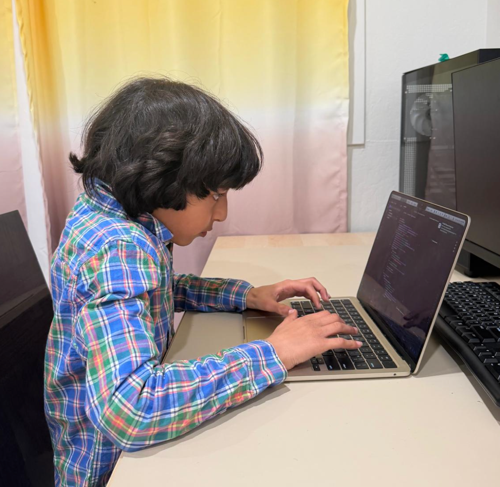
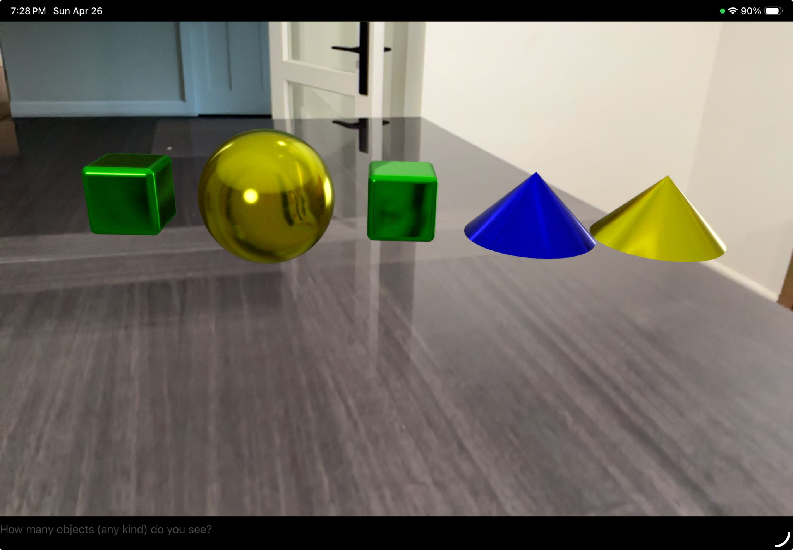
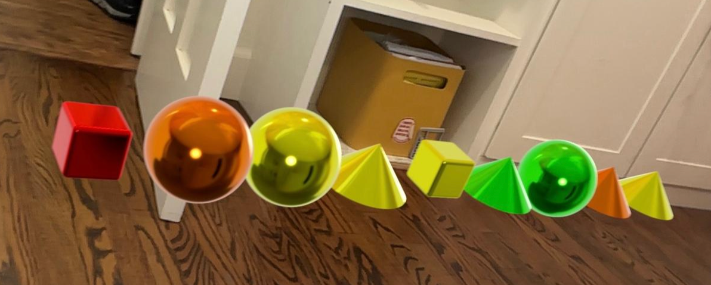
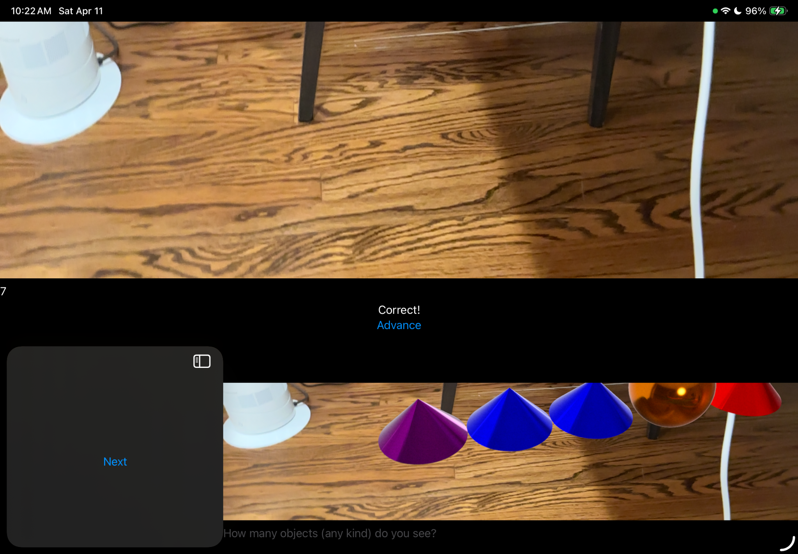
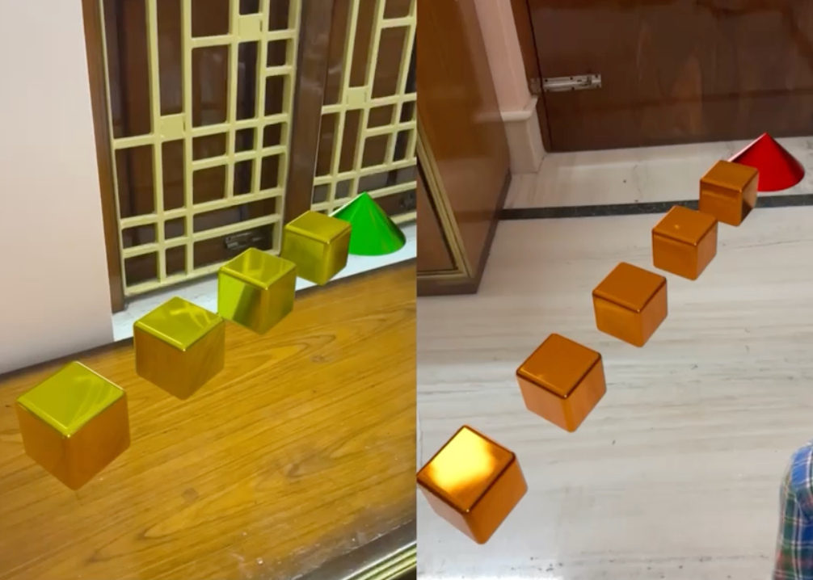
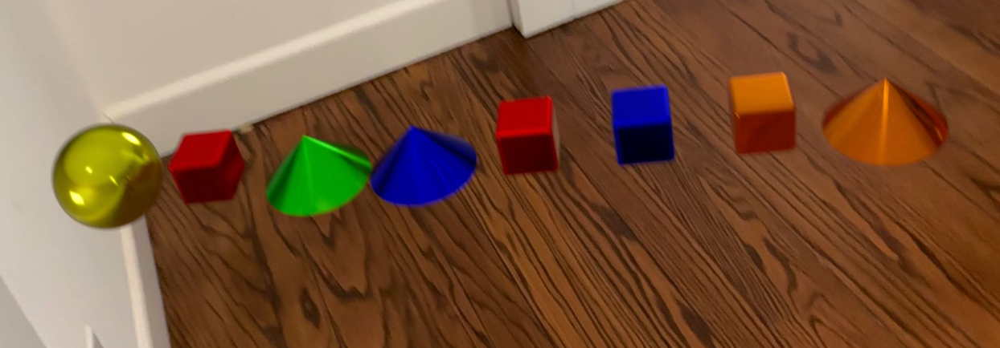
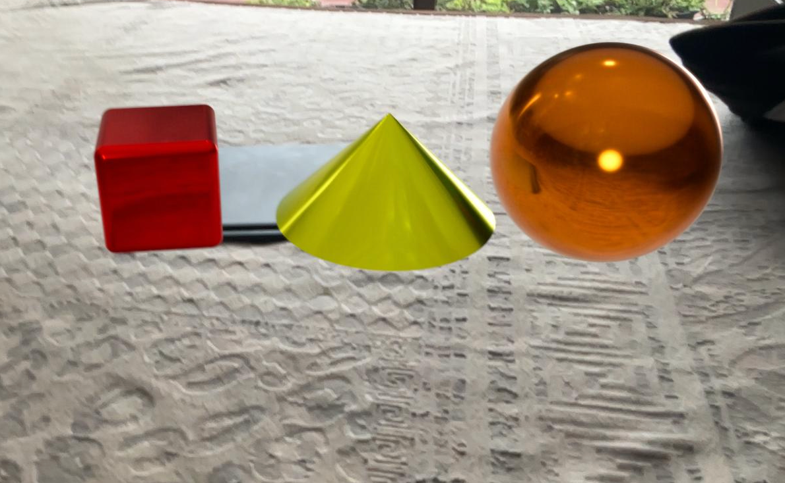
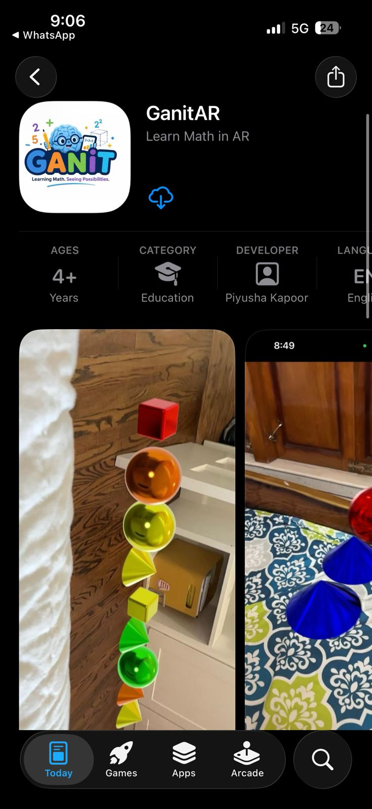
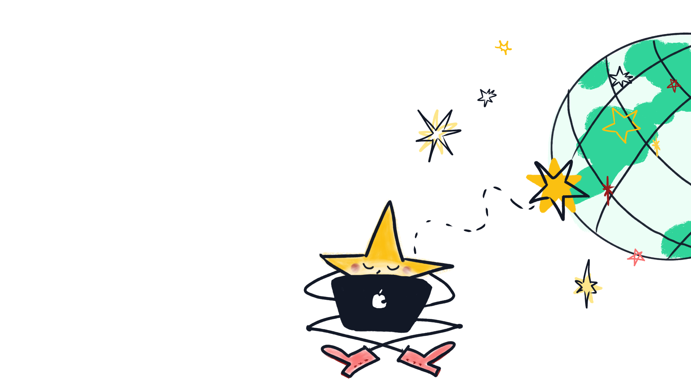

GANIT is a GenAI + AR math companion built for children with dyscalculia, ADHD, autism, and math anxiety — teaching through stories, calm visuals, and small confident steps.
GANIT (GenAI Adaptive Numeracy Improvement and Training) is an AI + AR mobile math app built to help children with dyscalculia, ADHD, autism, and math anxiety learn through stories, visuals, and small calm steps. Using Socratic methods and immersive learning, GANIT makes math feel like exploration — not pressure.
It is available as a web app and on the iOS App Store. The Android app is being prototyped.
1 in 5 children in the US experience arithmetic differences. After interviewing friends and classmates, I heard the same things again and again — "Addition is scary", "Multiplication confuses me", "UGH" said all the time. I wanted to build something that made math feel kind, colorful, and adventurous instead.

Live app: goganit.app (iOS) · web preview: ganit-phi.vercel.app






GANIT is live on the iOS App Store as GanitAR — Learn Math in AR for ages 4+. Tap the button below to install on your iPhone or iPad.

I interviewed 6 friends about math apps. Friends said "Addition is scary", "Multiplication confuses me", and "UGH" all the time. Existing apps didn't combine generative AI, AR, and story-based mini lessons for learners who struggle.
Could bringing tactile and 360° math experiences to every smartphone make math magical? I sketched quest-based learning with big colorful number blocks, calm animations, and adaptive pacing.
Built early prototypes, tested with classmates, iterated on feedback. AR boot time was fixed, the placement UX was redesigned, and a deprecated library was replaced with a supported alternative.

AI should make learning feel calm, personal, and encouraging — especially for children who learn differently. AR should augment both visual and color-blind learners with multi-sensory experiences. Math can feel fun and adventurous when children explore on their own, not because of a preset curriculum that restricts their curiosity.
GANIT helps children with dyscalculia, ADHD, autism, and math anxiety learn math through calm, story-based, AR-powered lessons. Tested with classmates across multiple cycles with consistent positive feedback on the calm UX and AR mode.
Long-term vision: make GANIT free and accessible to every child who struggles with math — everywhere.
I developed coding (Swift, ARKit, RealityKit, GenAI), research skills, leadership (founding GoGanit), and resilience. I learned to give and receive feedback constructively.
I now see myself as someone who can identify a real problem, build a solution from scratch, and keep improving through failure. GANIT taught me that technology is most powerful when built with empathy.
Making math feel safe, calm, and possible for every child — especially those who have been told they are not a "math person." GANIT is my first step toward that goal.